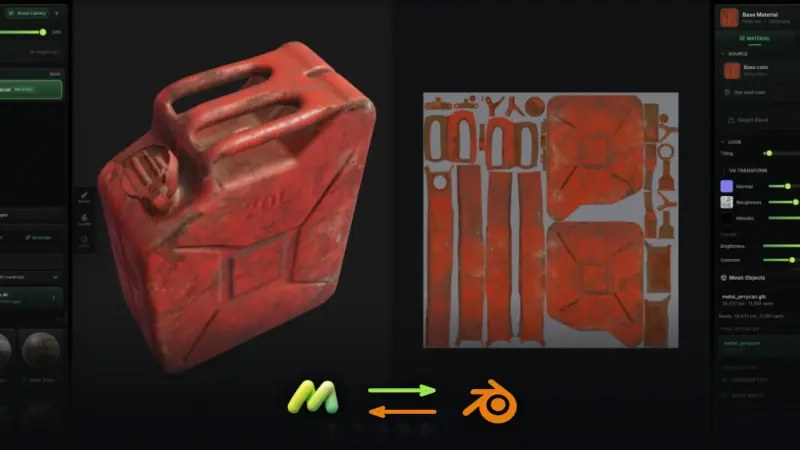

01
Mixos Live Link：Blender 與瀏覽器貼圖開始雙向同步
主動物件可直接送到 Mixos，貼圖 maps 再回到同一 Blender Principled BSDF。

Quick Impact｜最值得測貼圖 round-trip 與材質重掛時間。
完整分析
Production Delta
Mixos Live Link 把 Blender → 瀏覽器貼圖 → Blender 的 round-trip 變成雙向同步：active object 可直接送進 Mixos，貼圖結果再回到同一物件的 Principled BSDF。對角色與 Prop 貼圖迭代，價值在於少掉手動 export/import 與材質重新掛接。
適用流程
適合快速 look-dev、概念材質、外包 review 前的快速改色與小型資產貼圖。Mixos 也提供離線桌面 app 執行 bake；Live Link 本身 GPL，Blender 3.6+ 可用。
限制
正式 production 仍需驗證 UDIM、大型 4K/8K texture set、色彩空間、命名規範、版本控管與 Substance Painter 既有流程的差異；付費點在檔案輸出與 Live Link push。
20 分鐘實測
拿同一個遊戲 Prop 測傳統 FBX/texture round-trip 與 Live Link，記錄建立材質、更新貼圖、重新同步三輪所需時間，再確認 normal/roughness/alpha 是否一致。